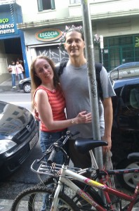
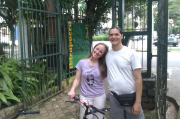
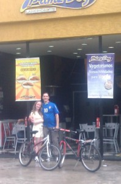
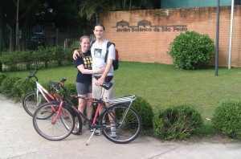
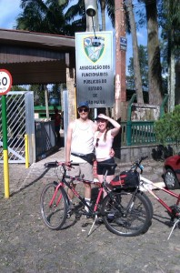

De uns tempos para cá eu e a Gabi, namorada, estamos nos programando para, em todo domingo e feriado, fazermos um passeio de bike por São Paulo.
Minha casa fica entre a hípica de Santo Amaro e o Carrefour da Granja Julieta e é o ponto de partida e chegada das nossas aventuras.
Já fomos até e voltamos de:
—- Espaço Unibanco na rua Augusta.
Nesse dia tomamos chuva leve na ida e aguaceiro na volta.
Quando saímos do cinema, às 19h30 (um filme francês com o sugestivo nome de “O garoto da bicicleta”) e vi que caía o céu sobre nossas cabeças (o maior medo de Abracurcix, o chefe da aldeia do Asterix) tive vontade de sentar na calçada e chorar, mas a Gabi me animou e a gente veio pela Paulista, desceu a Brigadeiro, pegou a Santo Amaro/João Dias e tomou chuva até ficar um aquário dentro dos nossos tênis.
–Parque Ibirapuera, na ida não choveu, mas na volta enfrentamos a tempestade. 
No Ibira tem umas árvores muito loucas, dá vontade de escalar.
—- Fomos por Moema até a lanchonete Prime Dog da rua Vergueiro, 1960 (lanchonete com opções de cachorro quente e hambúrguer vegetarianos/veganos); depois passamos em frente da casa da Dalva Mengele (serial killer de milhares de cães e gatos) na rua Mantiqueira, ela já sumiu das redondezas; e na sequência fomos ao parque da Aclimação (onde não se pode andar de bike).
Pela primeira vez não tomamos chuva nem na ida nem na volta. Total aprox. 32km. 
—- Fomos, na ida, pela ciclovia da avenida Roberto Marinho, zique zagueamos (assim se escreve o verbo, de acordo com o VOLP da ABL, pra quem quiser escrever “na lei”, embora o substantivo esteja lá grafado como zigue-zague) até encontrar a Eng. George Corbisier e a Eng. Armando de Arruda Pereira, mais zigue-zague até que atravessamos a passarela sobre a rodovia dos Imigrantes (essa passarela encurta uma barbaridade o caminho para o Botânico e o Zoo e fica no final da avenida Água Funda) e chegamos no Jardim Botânico de São Paulo.
Lá, por acaso, encontramos um pessoal da Pedal Verde http://pedalverde.wordpress.com/ que, no último domingo de cada mês, visita um local da cidade de bike para plantar mudas de árvores. Os bicicreteros se encontram!!!
São Pedro estava maneiro e escapamos de chuva. O Botânico é ótimo lugar para fazer piquenique.
—- Loucura, fomos até (e voltamos de) a unidade recreativa da AFPESP (associação dos funcionários públicos de sp) na beira da Guarapiranga. Lá tem um parque aquático legal, com toboágua e tudo.
Caminho: av. Vitor Manzini, av. Guarapiranga, estrada de M’Boi-Mirim, estrada do Embu-Guaçu e av. dos Funcionários Públicos.
Caminho cheio de subidas e descidas. Na av. M’Boi há muitas curvas para direita, em que se formam pontos cegos para os carros verem os ciclistas. Vale a pena subir na calçada para fazer as cuvas.
Fomos em horário impróprio, às 10h30 da manhã. A lua estava braba.
Na volta eu estava entregando a carcaça pros urubus quando, no final de uma subidona, apareceu um camelo de turbante e serviu laranjada geladinha pra gente (Mister Sheik da M’Boi).
Valeu, mas da próxima o negócio é sair cedinho pra fugir da lua.
Cerca de 40km. 
Para os próximos passeios gostaria de me aventurar por Grajaú e Marsilac.
Diz a lenda que há uma aldeia Tupi por lá e um caminho com balsas até Itanhaém ou Mongaguá.
Abraços aos mano bicicretero.

{kind=link}
{kind=link}
{kind=link}
{kind=link}
{kind=link}
{kind=link}
{kind=link}
{kind=link}